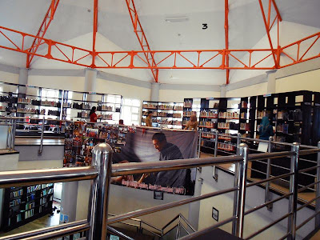
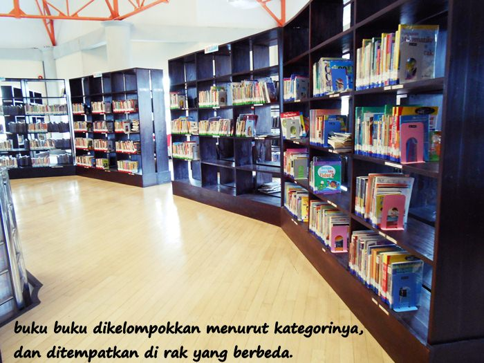
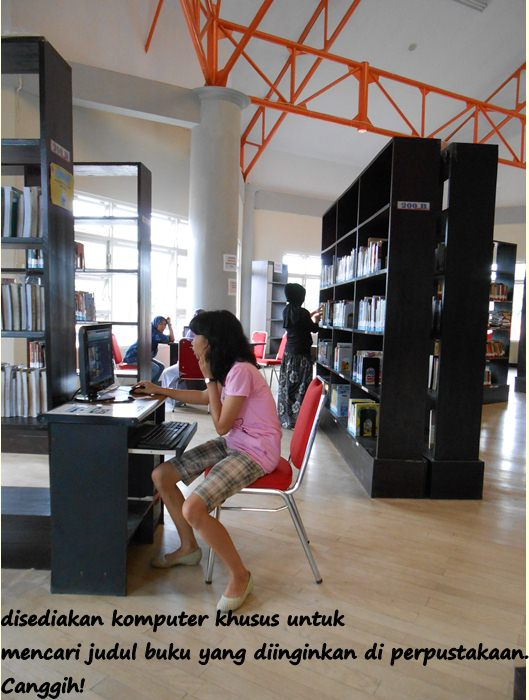

Sejarah Perpusda Salatiga
Perpustakaan Daerah Salatiga merupakan lembaga negara yang telah ada sejak tahun 1950-an. Hal ini dipelopori oleh karena adanya UU No. 17 Tahun 1950 tentang Pembentukaan Daerah Kota Kecil dalam Lingkungan Propinsi Jawa Barat, Jawa Tengah, dan Jawa Timur.
Dalam hal ini, Perpustakaan Daerah (Perpusda) Salatiga didirikan untuk menyediakan akses pengetahuan dan literasi bagi masyarakat setempat. Dengan koleksi buku yang beragam dan layanan yang ramah, Perpusda diharapkan menjadi tempat yang ideal bagi individu dari segala usia untuk mengeksplorasi dunia pengetahuan dan memperluas wawasan mereka.
Visi & Misi
Visi
Perpustakaan Daerah Salatiga memiliki visi untuk menjadi pusat informasi, pengetahuan, dan kebudayaan yang unggul di tingkat regional.
Misi
Sejalan dengan visi tersebut, misi Perpusda Salatiga meliputi:
- Meningkatkan sarana dan prasarana perpustakaan dan kearsipan untuk kenyamanan pengunjung.
- Meningkatkan kualitas Sumber Daya Manusia (SDM) di bidang perpustakaan dan kearsipan untuk mengoptimalkan pelayanan.
- Menyelamatkan dan memelihara arsip sebagai sarana informasi utama yang akurat dan terpercaya.
- Menarik dan melestarikan karya tulis cetak, karya rekam, serta sumber daya digital sebagai kekayaan intelektual daerah.
Tujuan Perpustakaan
Tujuan utama Perpustakaan Daerah Salatiga adalah untuk menyediakan akses yang mudah dan merata terhadap informasi, pengetahuan, dan sumber belajar bagi seluruh masyarakat. Dengan menyediakan berbagai koleksi buku, media digital, dan layanan yang inovatif, perpustakaan bertujuan untuk meningkatkan literasi, mendukung pendidikan, dan memperkaya budaya baca di komunitas lokal.
Foto Gedung Perpustakaan Daerah Salatiga


.jpg)


Jam Operasional
Perpustakaan Daerah Salatiga buka setiap hari dari Senin hingga Kamis, mulai pukul 08.00 hingga 17.00 WIB. Pukul 07.30 hingga 15.00 WIB pada hari Jumat, Pada 8.00-11.00 WIB di hari Sabtu dan di hari Minggu, perpustakaan tutup untuk memberikan waktu istirahat bagi staf dan pemeliharaan fasilitas.